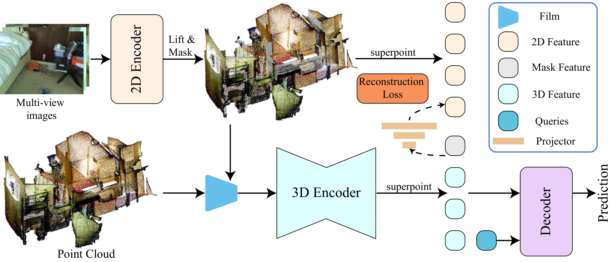

Paper Notes
Problem and Inputs
本文研究多视角 RGB 特征如何转移到 3D instance segmentation。纯 3D 编码器有结构但语义表达受限，直接把 lifted 2D priors 与几何特征拼接又没有明确约束二者如何对齐。
输入是多视角图像和 3D 点云；DINO-X 提取密集 2D 特征，通过相机投影 lift 到可见 3D 点，再按 superpoint 平均。输出是实例 mask，主干仍是稀疏 3D U-Net 和 DETR-style query decoder。
Paper Notes
Reading the Geometry-Guided Pipeline

Yuanhao Su and Shaofeng Zhang · Original figure, unmodified · CC BY 4.0 · Paper & Caption ↗
图 2 的关键顺序是：多视角 DINO-X → 每点 2D prior → superpoint 聚合 → 对背景 superpoint 做 mask → geometry-modulated injection → 稀疏 3D encoder → superpoint 特征 → instance decoder。
geometry modulation 将 raw 3D geometry 变换为 affine 参数，控制语义流在 encoder 输入处的注入。语义不是独立输出头，而是在进入 3D 编码器前受到几何调制。
Paper Notes
Masked Semantic Reconstruction
训练时只在背景 superpoint 上将 lifted 2D prior 置零，原始 prior 保留为重建目标。编码器必须用邻域语义和几何恢复缺失向量；前景不被破坏，从而避免辅助目标与实例识别冲突。
重建分支同时约束特征方向和幅度，并与原有 set-prediction segmentation loss 相加。它在推理时丢弃，不增加推理参数或 FLOPs。
L = L_base + λ L_masked-reconstruction ŷ_bg = Encoder(masked 2D prior, geometry) L_rec = ||ŷ_bg − y_bg||
Paper Notes
Experiments and Efficiency
数据集为 ScanNetV2（1201 train / 312 val，18 类）和长尾 ScanNet200（198 类）。指标是 mAP、AP@50、AP@25；在 Relation3D 和 SegDINO3D 两个框架上保持相同 2D priors、训练日程和 decoder。
ScanNetV2 完整模型为 65.0 mAP、82.8 AP@50、88.2 AP@25；相对 Relation3D 提升 2.5 mAP。ScanNet200 为 36.6 mAP，较 Relation3D 提升 5.0。superpoint 缓存把每场景加载时间从 263.3ms 降到 0.4ms，内存从 475.5MB 降到 0.8MB。
| Setting | mAP | AP@50 | AP@25 |
|---|---|---|---|
| ScanNetV2 full model | 65.0 | 82.8 | 88.2 |
| ScanNet200 full model | 36.6 | 46.1 | 52.3 |
| ScanNetV2 Relation3D baseline | 62.5 | 80.2 | 85.6 |
Paper Notes
Ablations and What Actually Helps
机制消融显示，单纯预测全部 lifted priors 只有边际收益；背景 mask 与 geometry modulation 的组合最好。背景 mask 为 65.0 mAP，而前景 mask 会下降 5.9 mAP 和 6.5 AP@50，说明辅助重建不应破坏承载实例身份的前景线索。
geometry modulation 增加 0.20M 参数，FLOPs 从 47.0G 到 112.5G，延迟从 103.5ms 到 107.3ms；masked reconstruction 只在训练期运行。低数据设置也有收益，但仍是室内 RGB-D 实例分割，不是流式重建验证。
Paper Notes
Transfer to LingBot-Map
它给 LingBot-Map 的直接启发不是把 2D 语义拼到 KV，而是让几何调制语义进入 memory 前的表示，并用 masked semantic reconstruction 约束压缩表示保留可恢复的区域语义。
可以对应为：当前帧像素对齐语义先 lift/聚合到重建 token，再由几何特征控制注入；训练时随机遮掉一部分低风险区域，要求历史或上下文恢复语义。几何 loss 仍必须保留，避免模型只优化语义重建。
但两者输入和输出不同：论文是有 3D 点云和多视角对齐的离线实例分割，LingBot-Map 是流式 RGB 重建。其 mAP 提升不能直接宣称会提升 LingBot 的深度或位姿。
Paper Notes
Limitations and Conclusions
方法依赖 lifted 2D priors 的质量，实验集中在 ScanNetV2/200 室内 RGB-D。论文没有覆盖开放世界、噪声相机位姿或长序列缓存。
最值得借鉴的是一个可证伪的设计：语义进入几何编码前必须受几何调制，并且要通过遮挡重建证明它被上下文吸收，而不是被动拼接。对我们的实验，至少应报告语义一致性、深度/点云误差、完整度、轨迹和额外开销。
Discussion
Reading Questions
Does the paper improve streaming reconstruction?
没有。它验证的是 ScanNet 实例分割；对 LingBot-Map 的迁移仍需独立实验。
Why mask background rather than foreground?
前景承载实例身份，遮掉前景会和分割目标冲突；背景遮挡提供上下文重建信号。
What is the useful LingBot experiment?
固定缓存和几何主干，比较直接拼接、几何调制、masked semantic reconstruction 及完整组合，并同时测几何与语义。
References
First submitted 2026-10-12. Read 2610.16122v1 on 14 November 2026. One original figure is reproduced under CC BY 4.0. Experimental results are reported by the authors and have not been independently reproduced.
Verified on 2026-11-14. Paper results refer to the linked versions. Repository references were checked on this date.